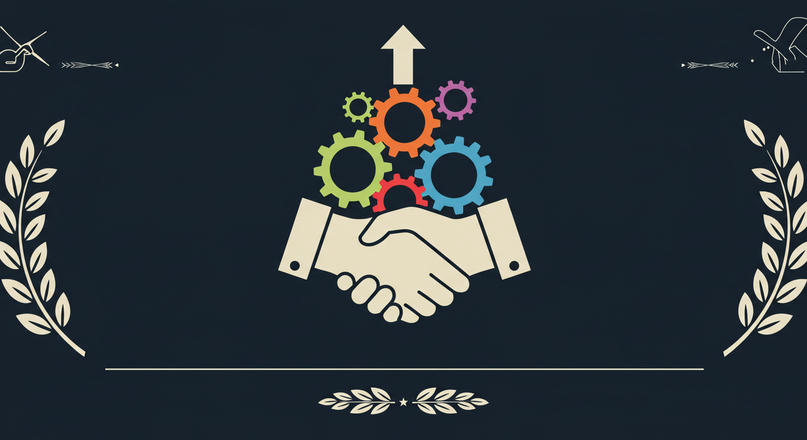

<!-- Slide 3-1: エグゼクティブサマリー1-1 -->
<section id="executive-summary-1-1" class="slide slide-executive-summary-1-1">
    <div class="slide-content">
        <h3 class="summary-main-title">戦略的な北海道産食肉の海外輸出事業：未来への挑戦</h3>
        <p class="summary-subtitle">われわれは、3年以内に、北海道No.1の食肉輸出企業になります。</p>

        <div class="summary-grid">
            <div class="summary-grid-item">
                <div class="item-icon">
                    
                </div>
                <h4 class="item-title">私たちのビジョン</h4>
                <p class="item-text">北海道の至宝を、世界へ。そして地域と共に。</p>
                <p class="item-keywords">高品質, グローバル展開, 地域経済活性化, 国際競争力</p>
            </div>
            <div class="summary-grid-item">
                <div class="item-icon">
                    
                </div>
                <h4 class="item-title">巨大な市場機会と独自の価値</h4>
                <p class="item-text">アジアが求める「本物」を、北海道から。</p>
                <p class="item-keywords">アジア市場成長, 品質・安全性, トレーサビリティ, ストーリー</p>
            </div>
            <div class="summary-grid-item">
                <div class="item-icon">
                    
                </div>
                <h4 class="item-title">勝利への戦略</h4>
                <p class="item-text">伝統×革新で築く、揺るぎない競争力。</p>
                <p class="item-keywords">生産者連携, 品質管理, デジタルマーケティング, サプライチェーンDX</p>
            </div>
            <div class="summary-grid-item">
                <div class="item-icon">
                    
                </div>
                <h4 class="item-title">目標達成へのコミットメント</h4>
                <p class="item-text">経験と情熱で、未来を拓く。</p>
                <p class="item-keywords">経験豊富なチーム, 専門家ネットワーク, 初期投資1億円, 3年で投資回収</p>
            </div>
        </div>
    </div>
</section> 